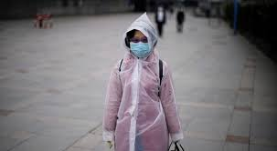
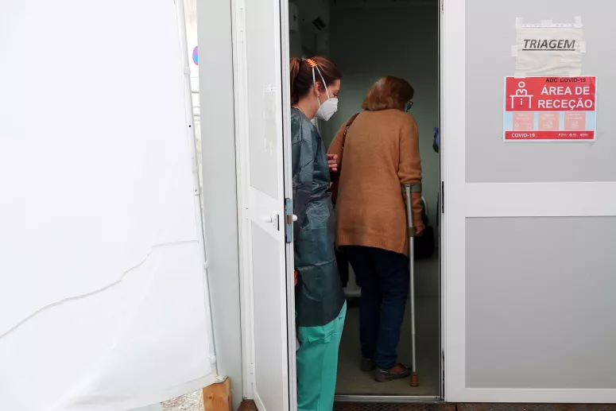
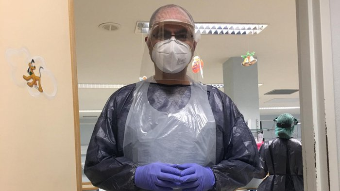

Portugal
PortugalFidelidade: Alta
Portugal registou no último dia mais 21 mortes de covid-19, aumentando o total para 735 desde o início da pandemia. O país tem um total de 20.863 casos de infecção pelo vírus SARS-CoV-2, mais 657 do que no dia anterior – o que corresponde a uma taxa de crescimento de 3,2%. Os dados foram divulgados nesta segunda-feira no boletim epidemiológico da Direcção-Geral da Saúde (DGS).
A taxa de letalidade em Portugal é de 3,5%, e acima dos 70 anos é de 12,8%. O número de recuperados mantém-se inalterado: são 610 — para se ser considerado “curado”, são precisos dois testes negativos.
Há 1208 pessoas internadas e 215 em unidades de cuidados intensivos (menos nove do que no domingo). Pessoas em tratamento no domicílio são 87,8% dos casos. A percentagem em internamento é de 5,8%, com 1,8% em cuidados intensivos e 4,8% em enfermaria”, revelou o secretário de Estado da Saúde, António Lacerda Sales, em conferência de imprensa.
Fonte : Publico - 20/04/2020
Fidelidade: Alta
Mais 25 mortos por COVID-19 em 24 horas e mais 163 infetados em Portugal. Os números foram divulgados esta segunda-feira no boletim epidemiológico da Direção-Geral da Saúde (DGS).
Desde o início da epidemia em Portugal, já se registaram 928 mortes associadas à COVID-19 e 24.027 casos de infeção, segundo o boletim epidemiológico divulgado pela Direção-Geral da Saúde (DGS). Relativamente aos dados de domingo, há um aumento de 25 mortos (crescimento percentual de 2,8%) e de 163 infetados (subida percentual de 0,7%.). Há já 1.357 casos de recuperação, mais 28 que ontem.
Fonte : Sapo - 27/04/2020
Fidelidade: Alta
Manuel é enfermeiro e voluntariou-se para passar a fazer serviço junto dos infetados, mas não arrisca mais e continua a dormir num quarto diferente do da mulher e a manter-se longe das filhas.
Sílvia já não passa a vida a limpar a casa com água e lixívia mas ainda não se atreve a reunir-se com o resto da família alargada — nem sequer com os que também foram infetados e já foram dados como recuperados.
E se Sara já se permite finalmente brincar com o filho, de 2 anos e meio, sem usar máscara, por outro lado não quer nem ouvir falar em voltar a meter um pé na rua — o que não deixa de ter a sua quota parte de ironia, já que foi precisamente em casa que apanhou o novo coronavírus.
Todos tiveram Covid-19 e todos foram dados como recuperados — fazem parte do único valor verde-esperança que consta dos relatórios onde a Direção-Geral de Saúde vai dando conta da evolução da doença, exatamente aquele que sobe de forma mais lenta e continua, pelo menos para já, a não conseguir suplantar o número negro dos óbitos.
Fonte : Observador - 18/04/2020
(Deslize sobre o gráfico para ver casos em cada dia)